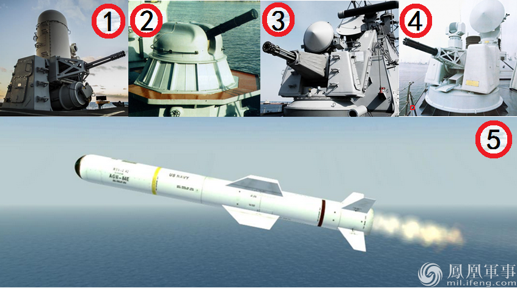

图左为7月28日曝光的最新052D，图右为2015年12月29日曝光的上1艘052D，这两艘舰均换装了1130近防炮（红圈处），更强的近防性能是为应对美日的全新导弹威胁，而保全自己的意义在于保证航母的安全。（凤凰军事）
凤凰军事 凤凰军评 12月29日
近日曝光图片显示，2016年7月28日最新1艘052D型驱逐舰在江南造船厂举行下水仪式，上一次类似仪式于2015年的12月29日曝光。相比此前已曝光或服役的052D型驱逐舰，这2艘新舰最明显的特征就是舰桥下的前甲板位置，由1座1130近防炮替换了之前的730近防炮。尽管这只是一款看似次要的装备替换，但其背后隐含的却是对美日骤增的反舰导弹威胁的应对。
与052D换装1130近防炮类似，054A换装1130近防炮出于相同的目的。（资料图）
目前确切刷舷号并服役的052D型驱逐舰有4艘（“172-昆明舰”、“173-长沙舰”、“174-合肥舰”、“175-银川舰”），而在大连造船厂、上海江南造船厂中在建的052D型驱逐舰还有多艘，新近曝光的这艘是网友确定的第9艘052D。至此，052D成为继“辽宁舰”、054A型护卫舰后，中国海军第3款装备1130近防炮的战舰。此前当054A换装1130近防炮时。网上有观点认为这使得中国战舰拦截反舰导弹的能力，由3至4马赫提升到6至7马赫。这是不准确的。事实上，无论是730还是1130，其面对的都是假想敌的高亚音速与极速不超过3马赫的超音速反舰导弹，提升的是命中率。

对于“密集阵”（①）、AK630（②）、“守门员”（③）与730（④）这类第一代近防炮而言，主要拦截目标还是类似“鱼叉”（⑤）这种亚音速掠海导弹。（凤凰军事）
在舰炮防空领域，此前对于战机目标，舰炮的威力都不在于直接击落目标，而是对目标进行驱离。二战时期曾大放异彩的美军VT引信，实际上就是以近炸原理，在敌方战机区域制造大量高速破片，从而杀伤或驱离战机。但对于加特林式近防炮而言，却需要保证毁伤导弹目标。无论是“密集阵”、AK630还是中国的730与1130，它们实际上是以密集弹幕，类似扬起一把沙子打中一只苍蝇的原理拦截反舰导弹。当然，随着这只苍蝇越来越敏捷，飞行速度越来越快，扬起的这把沙子在单位空间内的密度越大，拦截概率也就越大，这正是1130换装730的意义，而这只苍蝇正是美日的新型反舰导弹。
日本的XASM-3导弹（红圈处）是一款在中国国内评价不高的导弹，但导弹性能的优劣不在于与同类导弹的性能对比，而是能否对潜在目标构成威胁。（资料图）
在此前的《凤凰军评》中，凤凰军事已多次强调了美军最新的LRASM导弹对中国海军，尤其是中国航母的威胁。因为LRASM实际上是一款具有巡航导弹血统，兼具长射程、大威力与隐身性能的高亚音速反舰导弹。LRASM导弹不仅自身性能优秀，结合B1B等轰炸机载具，可轻松对中国航母发起远超冷战时期苏联的饱和打击。与此同时，日本的导弹威胁也在日益凸显。早在2015年底，日本就宣称将在2016年试射XASM-3超音速反舰导弹。尽管国内现有评论为XASM-3导弹的解读贬多于褒，认为这款导弹相比中国的鹰击12差距明显。但这是一叶障目，极易使我们忽略真正核心的问题。
从美日各自最新的反舰导弹性能来看，两者很可能分别针对中国航母编队中的不同目标，日本XASM-3负责压制摧毁中国航母编队中的护卫力量，而美国LRASM则负责集中力量攻击航母。（资料图）
根据日本公布的数据，XASM-3导弹最大射程200千米，极速3马赫，相比之下，中国的鹰击12最大射程550千米，极速可达4马赫，巡航速度也高达2.2马赫。XASM-3导弹的性能差距确实明显。但问题在于，衡量反舰导弹的标准，不是其与同类导弹的对照，而是其能否对假象目标构成足够威胁，从这一角度来看，XASM-3导弹是相对成功的。以航母特混编队为例，通常航母都位于核心部位，处在护航驱护舰的层层保护之中。面对这种情况，XASM-3导弹的目标是护航舰艇而不是航母，届时就像剥洋葱一样，XASM-3负责消灭或削弱航母编队的护卫能力，使威力更大的LRASM集中力量攻击航母。
SPY-1D（图左）是美军“宙斯盾”系统装备的最新批次舰载有源相控阵雷达，如果052D（图右）具有与其比肩的性能，针对XASM-3这种极速3马赫的掠海导弹目标，也仅有40秒的提前预警，此时近防炮或许是最后也是最有效的防御手段。（凤凰军事）
以美军“宙斯盾”系统装备的SPY-1D有源相控阵雷达为例，尽管其对高空目标具有370至400千米的探测距离，但受制于海洋杂波与地球曲面的限制，对掠海飞行战机目标的探测距离只有200千米，对掠海导弹目标的探测距离仅有40千米。这预示，如果日本以F2战机挂载XASM-3导弹对装备中国神盾的052D型驱逐舰护卫的航母发起攻击时，中国只能在自身进入XASM-3导弹射程后才能锁定其载机，而一旦此时F2战机发射XASM-3导弹，导弹在距052D驱逐舰200千米至40千米这段范围内将可能无法被探测，而当其在距052D驱逐舰40千米时再度现身时，留给052D的时间只有40秒。
按照此前俄罗斯对比“卡什坦”（①）与AK630（②）得出的数据，同等距离内，当单位空间中弹丸数量增加1倍，对极速不高于3马赫的目标（③）拦截概率将由70%增至92%。（凤凰军事）
面对这种情况，中国除了强化052D的雷达探测能力之外，最需要强化的就是在这最后40秒中的反击，目前052D上能在如此短时间内做出反应的，只有舰桥下前甲板的730近防炮与机库上的HHQ-10近防导弹，而相比之下，前者的防御能力无疑更加直接、有效。日后，日本很可能以2枚XASM-3导弹攻击1艘驱逐舰的方式增加命中与毁伤率，面对需要同时拦截至少2枚3马赫的反舰导弹，1130近防炮无疑比730近防炮更加优越。按照此前俄罗斯对比“卡什坦”与AK630得出的数据，同等距离内，当单位空间中弹丸数量增加1倍，对极速不高于3马赫的目标拦截概率将由70%增至92%。
因此，052D换装1130就自身而言，是在面对日本新型导弹时最后40秒的奋力一搏，而对于航母而言，则是对美日反舰导弹高低搭配，综合性对航母饱和打击新战法的有力应对，因此，无论是在052D还是054A上，1130保卫的实际上都是中国航母。（凤凰军事 凤凰军评 刘畅）